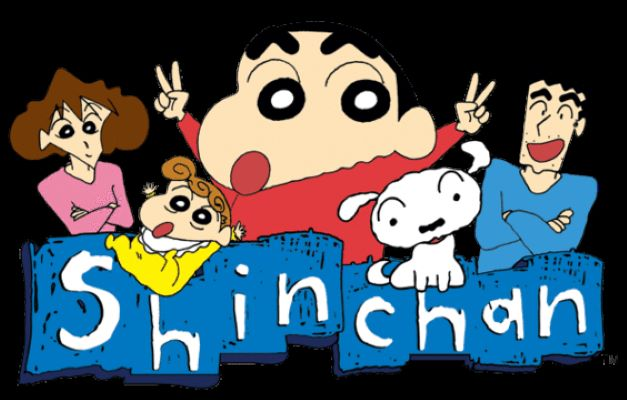
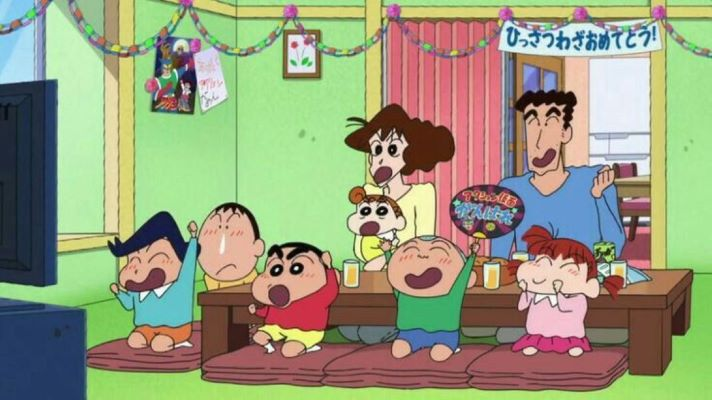
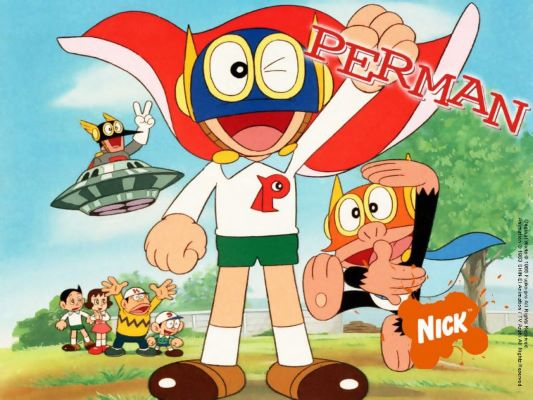
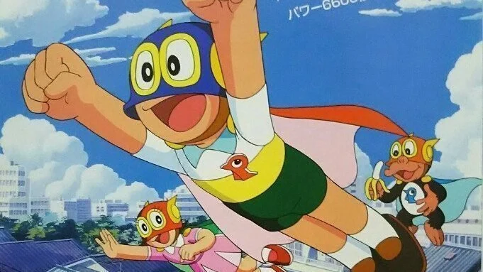

With over 59 years of leading the Japanese content industry and having 25 network affiliate stations covering the nation, TV Asahi Corporation delivers top rated drama series, enduring animation programs and high-quality variety shows that target the younger demographic, on top of broadcasting strong sports events and daily news shows.
TV Asahi’s programs are globally popular, especially in Asia with approximately 20 countries regularly broadcasting its programs. With the high interest in Japan’s distinct culture giving momentum to content distribution in the region, TV Asahi has formed strategic partnerships in India – where it has successfully released the remake of Ninja Hattori – and Thailand, which will serve as the hubs for furthering business endeavors in Asia.